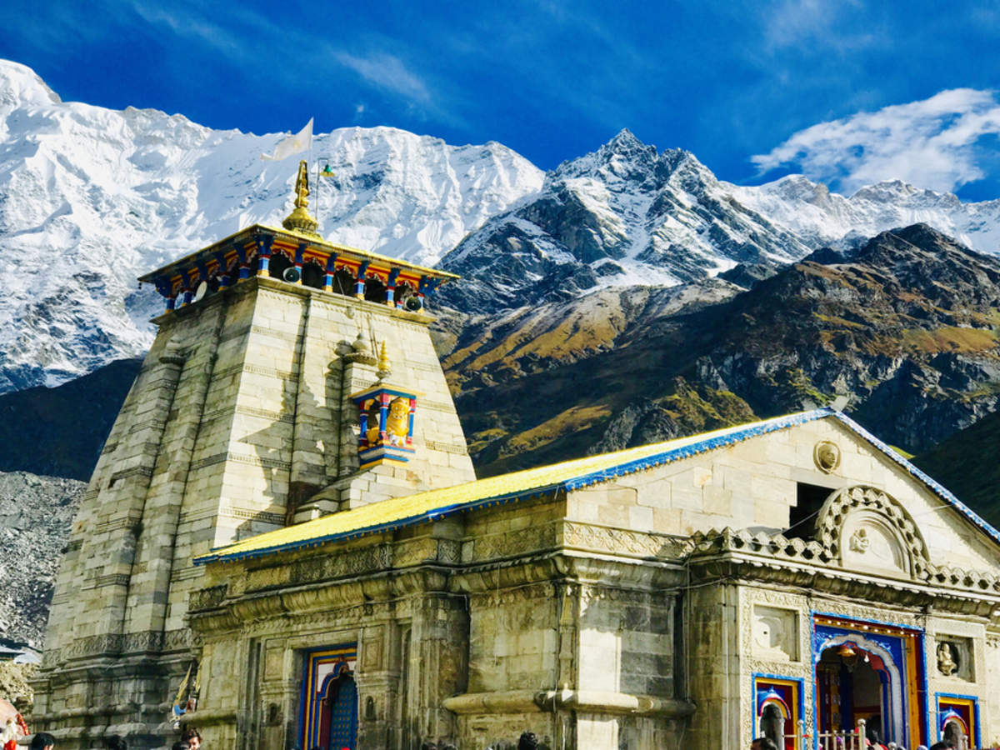
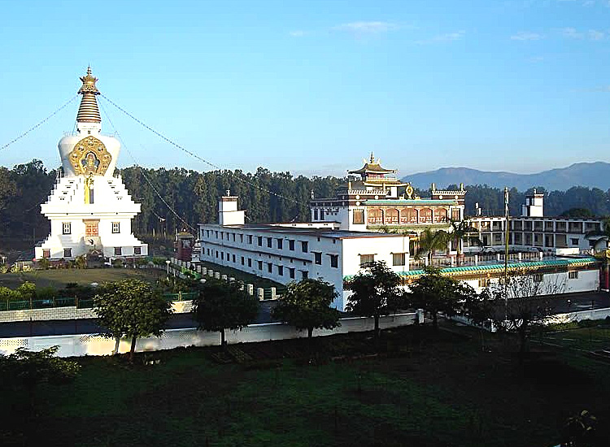
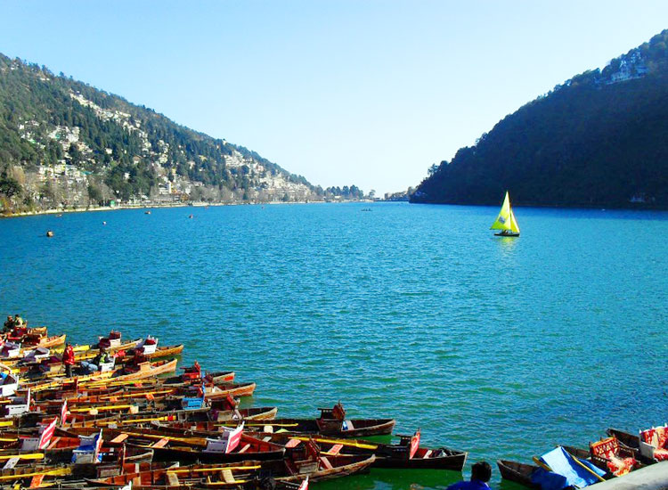

Uttarakhand
Tourist places
Rishikesh
Rishikesh at the foothills of the Himalayas along the banks of River Ganga has some interesting pleasures for holidays in Uttarakhand. Go for exhilarating river rafting in Rishikesh, stay at beach camps, practice Yoga Asanas at ashrams with a perfect backdrop of mighty Himalayas or go exploring the mountains. This ‘Yoga Capital of the World’, holds International Yoga Festival and will never cease to amuse you with surprises at every turn.

Haridwar
Haridwar is one of the seven holiest cities for Hindus. Although the city remains vivacious throughout the year but the footfall is maximum during the Kumbh Mela, and the month of Saavan. Pilgrims from far and wide visit the Temples in Haridwar. Har ki Pauri, the river ghat is also one of the best places to visit in the town. It is the site of the mesmerizing Ganga aarti in Haridwar. Every evening, there is a worship ritual for the River Goddess. A million of tiny flickering lamps are floated in the river with sounds of bells and devotees and priests singing praises with full devotion.

Kedarnath
Kedarnath is the highest and utmost among all Jyotirlingas. Kedarnath is a holy Hindu town located in Rudraprayag district of Uttarakhand in India and has gained importance because of Kedarnath Temple. Kedarnath has been a pilgrimage center since the olden times. It is one of the Char Dhams situated in the Himalayas. Kedarnath is located at an astounding height of 3584 meters above sea level near the head of the Mandakini River. On the way to Kedarnath, you will spot several striking sights, including the Vasuki Tal Mountain Lake and Gauri Kund. The Kedarnath Temple lies amongst the magnificent snow-capped Garhwal Himalayan ranges and is thronged by thousands of tourists each year.

Kedarnath
Dehradun grabs much of the attention due its picturesque location. The capital of Uttarakhand is a city of myriad pleasures. Snuggled in the Doon Valley, betwen the rivers Ganga and Yamuna, it’s a city of unmatched picturesque beauty. It’s the gateway to the scenic hills of Uttarakhand. The town has a number of monuments from the colonial days of the British Raj. Having plethora of options to explore, it also serves as the picnic spot for many. It is well connected with other destinations and thus is a halting point for a short yet sweet getaway

Nainital
The City of Lakes, Nainital in Uttarakhand is one of the most popular places to visit in Uttarakhand. The city gets its name from Naini Lake, an awe-inspiring lake at the foothills of the mighty Himalayas present an exotic view. Nainital is a natural majesty. Snow covered mountains in backdrop, scenic beauty, lovely lakes and lush flora, grabs your attention instantly. Preferred by honeymooners and families alike, this serene hill station offers the best snowfall experience. ideal for honeymoon couples, families as well as nature lovers, it’s one of best hill stations in India.